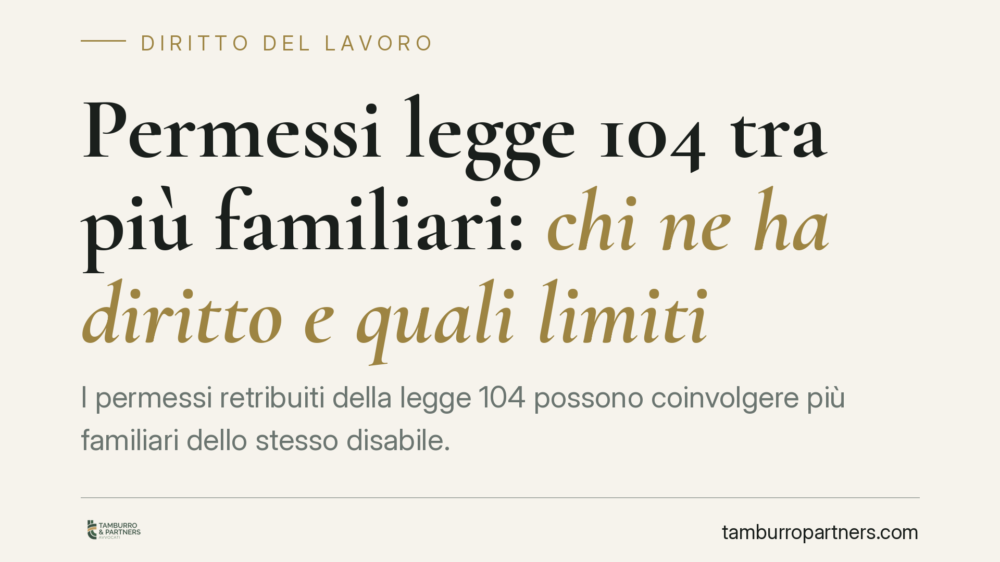

Permessi legge 104 tra più familiari: chi ne ha diritto e quali limiti
I permessi retribuiti della legge 104 possono coinvolgere più familiari dello stesso disabile. Ma quanti giorni spettano davvero e cosa succede se si superano i limiti? Le regole vigenti fissano paletti precisi, e l'uso scorretto espone al recupero delle somme in busta paga. Facciamo chiarezza su un punto spesso frainteso, distinguendo diritto individuale e divieto di sovrapposizione.

Il tema
I tre giorni mensili di permesso retribuito previsti dalla legge sulla disabilità sono tra i benefici più utilizzati e, allo stesso tempo, più fraintesi. La confusione ricorrente riguarda la cosiddetta "condivisione" tra più familiari che assistono la stessa persona: si tratta di un plafond unico da spartire, oppure ogni avente diritto ha i propri tre giorni?
La domanda non è teorica. Un errore nel conteggio può tradursi in permessi fruiti senza copertura, con conseguente recupero delle somme da parte del datore o dell'ente previdenziale.
> Nota redazionale. Circolano riferimenti a una recente circolare INPS in materia. Non essendone ad oggi verificabile con certezza numero, data e contenuto, questo contributo si fonda sulla normativa vigente e sulla prassi consolidata. Prima di assumere decisioni, verificare l'esistenza e il testo esatto della circolare sul portale ufficiale INPS.
Inquadramento normativo
La base è l'art. 33, comma 3, della legge 5 febbraio 1992, n. 104, che riconosce al lavoratore dipendente che assiste una persona con disabilità in situazione di gravità (accertata ai sensi dell'art. 3, comma 3, della stessa legge) tre giorni di permesso mensile retribuito, coperti da contribuzione figurativa.
Il D.lgs. 30 giugno 2022, n. 105 ha modificato l'impianto abolendo il principio del referente unico: prima, salvo il genitore, il diritto ad assistere lo stesso disabile poteva essere riconosciuto a un solo lavoratore. Oggi il permesso può essere riconosciuto a più lavoratori aventi diritto per la stessa persona assistita, che possono alternarsi nell'assistenza.
È qui che va corretto l'equivoco più diffuso. La regola vigente non trasforma i tre giorni in un tetto unico da ripartire tra tutti i familiari. Ciascun lavoratore avente diritto matura il proprio plafond di tre giorni mensili. Il limite riguarda invece la contemporaneità: non è ammesso che due o più familiari fruiscano del permesso nello stesso giorno per assistere lo stesso disabile, perché verrebbe meno la logica dell'alternanza voluta dalla riforma.
In sintesi: più familiari, ciascuno con i suoi tre giorni; divieto di sovrapposizione nella medesima giornata per il medesimo assistito.
Implicazioni pratiche
Per il lavoratore che assiste un familiare gravemente disabile insieme ad altri parenti, le conseguenze operative sono precise.
Primo: ogni avente diritto conteggia i propri giorni in modo autonomo. La presenza di altri familiari beneficiari non erode il proprio monte-permessi.
Secondo: occorre coordinare i giorni con gli altri assistenti, perché la fruizione nella stessa data per lo stesso disabile è irregolare e può essere contestata.
Terzo: chi assiste più persone con disabilità grave matura un plafond distinto di tre giorni per ciascuna persona assistita. Questo non contraddice quanto sopra: il conteggio è per rapporto lavoratore-assistito, non un tetto globale.
Quarto, e più delicato: in caso di fruizione oltre i limiti o in violazione del divieto di contemporaneità, il datore di lavoro può procedere al recupero delle somme indebitamente erogate. La base giuridica è quella generale dell'indebito oggettivo (art. 2033 c.c.), oltre alle regole sulla ripetibilità delle retribuzioni non dovute; sul piano contributivo, l'INPS può recuperare le prestazioni non spettanti secondo la disciplina previdenziale applicabile.
Cosa fare in concreto
- Verifica il tuo status di avente diritto: grado di parentela e situazione di gravità accertata devono risultare dalla documentazione INPS.
- Conteggia i tuoi tre giorni separatamente da quelli degli altri familiari: sono un diritto individuale, non una quota residua.
- Coordina il calendario con gli altri assistenti dello stesso disabile ed evita di fruire del permesso nella loro stessa giornata.
- Documenta l'effettiva destinazione del permesso all'assistenza, per prevenire contestazioni e richieste di recupero.
- Controlla eventuali circolari INPS aggiornate direttamente sul portale ufficiale prima di modificare le tue abitudini di fruizione.
In presenza di richieste di restituzione in busta paga o di contestazioni sull'uso dei permessi, consigliamo di far valutare la posizione prima di accettare trattenute, verificando la correttezza del conteggio applicato.
---
*Contributo informativo a cura di Tamburro & Partners - Avv. Giuseppe Tamburro. Non costituisce parere legale.*
Ogni storia di lavoro ha i suoi tempi.
Se gestisci HR e vuoi un confronto su contenzioso, ispezioni o licenziamenti, scrivi allo studio. Ti rispondiamo entro un giorno lavorativo.